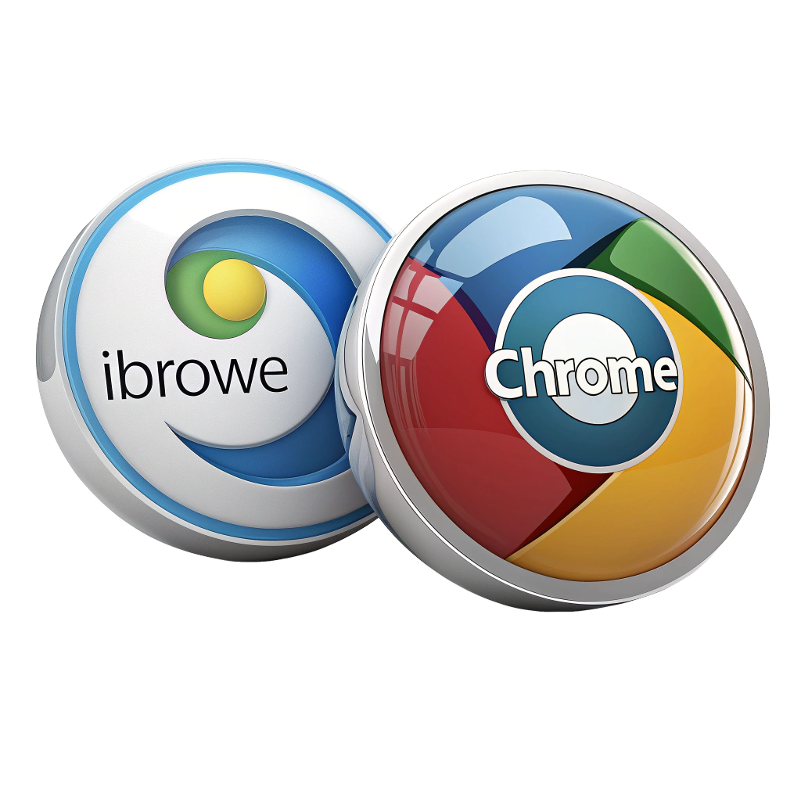

iBrowe vs Chrome
เปรียบเทียบให้เห็นชัดๆ ว่าทำไม iBrowe ถึงเป็นเบราว์เซอร์ที่ดีที่สุดสำหรับคุณมาดูกันว่าเราดีกว่ายังไง

เปรียบเทียบให้เห็นชัดๆ ว่าทำไม iBrowe ถึงเป็นเบราว์เซอร์ที่ดีที่สุดสำหรับคุณมาดูกันว่าเราดีกว่ายังไง
Google คือตัวอย่างชั้นนำของบริษัท “Big Tech” และเป็นหนึ่งในบริษัทที่มีมูลค่าสูงที่สุดในโลก แม้ว่าหลายคนจะนึกถึง Google ในฐานะกล่องวิเศษ (ที่มาของคำกริยา “to google” หรือ “ค้นหาในกูเกิล”) แต่จริง ๆ แล้ว Google เป็นบริษัทโฆษณา รายได้มหาศาลนับพันล้านต่อปีของพวกเขาส่วนใหญ่มาจากการขายโฆษณา เพื่อขับเคลื่อนโฆษณาเหล่านั้น เบราว์เซอร์ Chrome (และเครื่องมือค้นหาของ Google) จะเก็บข้อมูลเกี่ยวกับคุณให้ได้มากที่สุด จากนั้นพวกเขา “สร้างรายได้” จากข้อมูลนี้ในรูปแบบของโฆษณาที่เจาะจงเป้าหมายสูง ยิ่งพวกเขารู้จักคุณมากเท่าไหร่ พวกเขาก็ยิ่งทำเงินได้มากขึ้นเท่านั้น

Chrome ถูกสร้างมาเพื่อการติดตาม มันอนุญาตให้โฆษณาน่าขนลุก ตัวติดตาม คุกกี้ และอื่น ๆ ติดตามคุณไปทั่วทั้งเว็บ บันทึกทุกสิ่งที่คุณทำ และเชื่อมโยงกิจกรรมเหล่านั้นเข้ากับตัวคุณโดยตรง โดยที่คุณไม่รู้ตัวหรือยินยอม
ในขณะเดียวกัน iBrowe มีความเป็นส่วนตัวเป็นค่าเริ่มต้น
ทั้ง iBrowe และ Chrome ถูกสร้างขึ้นบนพื้นฐานของเอนจินเบราว์เซอร์ Chromium แบบโอเพ่นซอร์ส (ซึ่งยังเป็นขุมพลังให้กับ Edge, Opera และ Vivaldi ด้วย) ดังนั้นทั้งคู่จึงมีหน้าตาและการทำงานที่คล้ายกัน ฟีเจอร์พื้นฐานอย่างบุ๊กมาร์กและแท็บมีอยู่ในทั้ง iBrowe และ Chrome และส่วนขยายใด ๆ ที่ใช้งานได้ใน Chrome ก็จะใช้งานได้ใน iBrowe เช่นกัน (ถึงแม้ว่า iBrowe จะมีฟีเจอร์ในตัวมากมายจนคุณอาจไม่จำเป็นต้องใช้ส่วนขยายเลยก็ได้)
เมื่อพูดถึงฟีเจอร์ที่สะดวกและมีประโยชน์ iBrowe นำหน้าไปไกลมาก หากต้องการฟังก์ชันการใช้งานแบบเดียวกันใน Chrome คุณจะต้องติดตั้งส่วนขยายหลายตัว ซึ่งแต่ละตัวจะทำให้ประสิทธิภาพช้าลงยิ่งขึ้น และเพิ่มความเสี่ยงด้านความปลอดภัยมากขึ้นไปอีก
ไม่มีข้อกังขาเลยว่า iBrowe ชนะขาดในเรื่องฟังก์ชันการใช้งาน
iBrowe สำหรับเดสก์ท็อปถูกสร้างขึ้นบนเอนจินเบราว์เซอร์ Chromium ซึ่ง Chromium เป็นโปรเจกต์โอเพ่นซอร์ส หมายความว่ามันสามารถถูกดัดแปลงให้กลายเป็นเบราว์เซอร์ที่เน้นการสอดแนมผู้ใช้ เช่น Chrome หรือกลายเป็นสุดยอดแห่งความเป็นส่วนตัวอย่าง iBrowe ได้ เราได้เพิ่มฟีเจอร์ใหม่ ๆ เข้าไปหลายสิบอย่างและการป้องกันความเป็นส่วนตัวนับร้อยรายการลงบนแกนหลักนี้ รวมถึงลบฟีเจอร์หรือโค้ดใด ๆ ที่อาจส่งผลเสียต่อประสิทธิภาพหรือความเป็นส่วนตัวออกไป ในแง่เทคนิค iBrowe เป็น "fork" (สาขาแยก) ของ Chromium และเราทำการปรับแต่งเหล่านี้ผ่านกระบวนการที่เรียกว่า "patching"
ได้ คุณสามารถใช้ส่วนขยายของ Chrome ใด ๆ ใน iBrowe ได้ ทั้งสองเบราว์เซอร์ถูกสร้างขึ้นบนเอนจินเบราว์เซอร์ Chromium แบบโอเพ่นซอร์ส ดังนั้นส่วนขยายใด ๆ ที่พบใน Chrome Web Store จะสามารถทำงานได้ในทั้งสองเบราว์เซอร์ แต่โปรดทราบว่าส่วนขยายนั้นเป็นซอฟต์แวร์เสริม ดังนั้นการติดตั้งส่วนขยายใด ๆ บนโทรศัพท์หรือคอมพิวเตอร์ของคุณอาจเพิ่มความเสี่ยงต่อการถูกแฮ็ก การถูกติดตาม หรือสิ่งที่แย่กว่านั้น หนึ่งในข้อดีหลักของ iBrowe คือ ด้วยฟีเจอร์ที่ยอดเยี่ยมและการป้องกันความเป็นส่วนตัวที่มีอยู่ในตัว คุณจะไม่จำเป็นต้องใช้ส่วนขยายมากนัก การใช้ส่วนขยายน้อยลงหมายถึงความเป็นส่วนตัว ความปลอดภัย และประสิทธิภาพที่ดีขึ้นบนอุปกรณ์ของคุณ
iBrowe ทำงานได้ดีบนพีซีทุกเครื่อง และมีประสิทธิภาพดีกว่าบนเครื่อง Windows มากกว่า Chrome ด้วยการบล็อกโฆษณาและตัวติดตาม มันใช้ RAM และ CPU น้อยลง และช่วยประหยัดหน่วยความจำ
iBrowe มีให้ใช้งานบน Android และ iOS, macOS และ Windows รวมถึง Linux ไม่ว่าคุณจะใช้อุปกรณ์หรือระบบปฏิบัติการใด iBrowe จะทำงานได้ดีกว่าเบราว์เซอร์เริ่มต้น หรือเบราว์เซอร์อื่น ๆ ที่คุณอาจติดตั้งบนอุปกรณ์นั้น
จริง ๆ แล้ว iBrowe ทำงานได้ดีกว่าบน Android มากกว่า Chrome อย่างมาก iBrowee บล็อกโฆษณาและตัวติดตาม ซึ่งหมายความว่ามันทำงานได้อย่างมีประสิทธิภาพมากกว่า Chrome โดยเฉพาะบนอุปกรณ์มือถือ iBrowe สำหรับ Android จะช่วยคุณประหยัดข้อมูลมือถือ แบนด์วิดท์ และอายุการใช้งานแบตเตอรี่เมื่อเทียบกับ Chrome
iBrowe Browser, iBrowe Search และฟีเจอร์ต่างๆ ทั้งหมด พัฒนาโดย iBrowe Software Co.th. ซึ่งเป็นบริษัทเอกชนอิสระ iBrowe ไม่ขึ้นกับบริษัทเทคโนโลยีใดๆ และมุ่งมั่นต่อสู้กับการละเมิดความเป็นส่วนตัวของบริษัทยักษ์ใหญ่ iBrowe มีอยู่เพื่อช่วยเหลือผู้ใช้จริง ไม่ใช่เพื่อผลประโยชน์ของบริษัทเทคโนโลยีไร้ตัวตน
Chrome และเครื่องมือค้นหาของมันอย่าง Google ถูกครอบครองโดย Alphabet (หรือที่รู้จักในชื่อ Google) ซึ่งเป็นหนึ่งในบริษัทที่ใหญ่ที่สุด (และร่ำรวยที่สุด) ในโลก เป้าหมายของทุกสิ่งที่พวกเขาทำคือการเพิ่มผลกำไรสูงสุดโดยแลกกับความเป็นส่วนตัวของผู้ใช้
ใช่ iBrowe มีฟีเจอร์นี้เหมือนกัน แต่เราเรียกมันว่า “หน้าต่างส่วนตัว” (private windows) แทน อย่างไรก็ตาม สิ่งสำคัญที่ต้องรู้คือ หน้าต่างไม่ระบุตัวตนไม่ใช่วิธีการปกป้องความเป็นส่วนตัวแบบสุดยอด สิ่งที่หน้าต่างเหล่านี้ทำคือลบคุกกี้จากเซสชันการท่องเว็บนั้น ๆ เท่านั้น เพื่อไม่ให้มันเชื่อมโยงกับเซสชันไม่ระบุตัวตนในอนาคต หรือการท่องเว็บที่คุณทำในหน้าต่างปกติ เมื่อคุณท่องเว็บในหน้าต่างไม่ระบุตัวตน คุณยังคงถูกติดตามโดยตัวติดตามจากเว็บไซต์ที่คุณเยี่ยมชมอยู่ดี
ง่ายๆ เลย iBrowe Browser เร็วกว่า Google Chrome ถึง 3 เท่า เพราะ iBrowe บล็อกโฆษณาและตัวติดตามที่ละเมิดความเป็นส่วนตัวโดยอัตโนมัติ ทำให้มีข้อมูลน้อยลงที่ต้องโหลดในแต่ละหน้าเว็บผลลัพธ์คือ หน้าเว็บโหลดเร็วขึ้น ประหยัดเวลา ประหยัดเงิน และยืดอายุแบตเตอรี่ อีกทั้งยังทำให้คุณปลอดภัยยิ่งขึ้นขณะใช้งานออนไลน์เรียนรู้เพิ่มเติม
ใช่! iBrowe ใช้งานได้ฟรี 100% เพียงดาวน์โหลด iBrowe Browser สำหรับ เดสก์ท็อป, Android หรือ iOS แล้วเริ่มต้นใช้งานได้เลยคุณยังสามารถใช้ iBrowe Search ได้ฟรีจากเบราว์เซอร์ใดก็ได้ที่ search.ibrowe.com หรือตั้งเป็นเครื่องมือค้นหาเริ่มต้นของคุณนอกจากนี้ Brave ยังมีฟีเจอร์พรีเมียมแบบสมัครสมาชิก เช่น iBrowe Talk Premium และ iBrowe Firewall + VPN
.svg)
.svg)